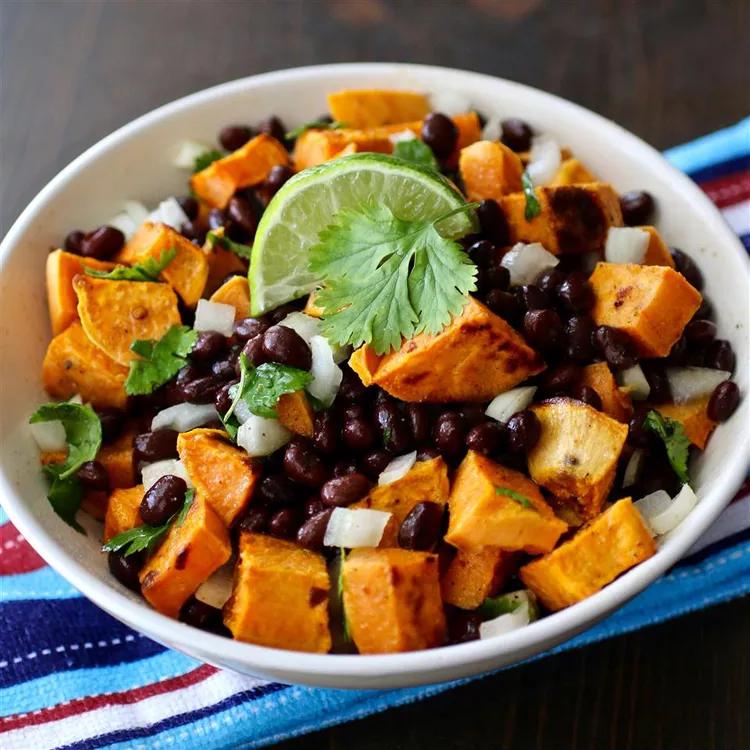

Black Bean and Sweet Potato Salad
Description
This is a great side dish using fresh ingredients. There are never leftovers!
Ingredients
- 1 pound sweet potatoes, peeled and cut into 3/4-inch cubes
- 3 tablespoons olive oil, divided
- 1/2 teaspoon ground cumin, or more to taste
- 1/4 teaspoon red pepper flakes (optional)
- coarse salt and ground black pepper to taste
- 2 tablespoons freshly squeezed lime juice
- 1 (14.5 ounce) can black beans, rinsed and drained
- 1/2 red onion, finely chopped
- 1/2 cup chopped fresh cilantro
Steps
- Preheat oven to 450 degrees F (230 degrees C).
- Spread sweet potatoes onto a rimmed baking sheet. Drizzle 1 tablespoon olive oil over sweet potatoes; season with cumin, red pepper flakes, salt, and pepper. Toss sweet potatoes until evenly coated.
- Roast on the lower rack of the preheated oven, stirring halfway through, until sweet potatoes are tender, 25 to 35 minutes.
- Whisk remaining 2 tablespoons olive oil and lime juice together in a large bowl; season with salt and pepper. Add sweet potatoes, black beans, onion, and cilantro; gently toss to coat.
Back to the main page.